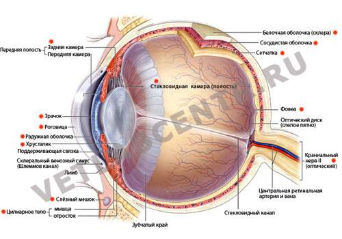

Глаза
Если сравнить кошку с другими домашними животными, можно заметить, что у нее самые большие глаза относительно размеров тела.
Уже давно ученые заметили уникальную особенность кошки — бинокулярное (стереоскопическое) зрение. Это свойство определяется необычным расположением глаз: они находятся спереди, по обе стороны от носа, и у животного есть возможность рассматривать интересующие его предметы под углом 205° в одном и том же направлении при одновременном пересечении поля зрения в центральной точке. Это свойство позволяет кошкам безошибочно определять расстояние до того или иного предмета. Кроме этого, при таком устройстве глаз животное получает возможность видеть то, что расположено не только непосредственно перед ним, но и по обе стороны.
Радужная оболочка, окружающая зрачок кошачьего глаза, обладает подвижностью, как у всех представителей класса млекопитающих. Она приводится в движение с помощью мышц, соединенных с глазным яблоком.
Благодаря этому свойству радужной оболочки глаза при ярком естественном либо искусственном освещении зрачок кошачьего глаза вытягивается по вертикали и принимает элипсообразную форму. Это предохраняет глаз животного от проникновения в него большего количества света, чем это необходимо для восприятия окружающего мира.
Благодаря особенностям строения глаз кошки могут видеть в темноте. Ошибочным является мнение, что кошки прекрасно видят в темноте из-за того, что их глаза могут светиться. Причиной свечения кошачьих глаз в темноте является то, что они обладают способностью накапливать отраженные световые лучи.
С помощью прекрасно развитого зрения кошка улавливает отражение от предметов даже самого слабого луча света, проникающего в помещение, где она находится, и, благодаря этому, ориентируется в пространстве. Но в абсолютной темноте животное, разумеется, видеть не может.
Зрачки кошки расширяются и становятся совершенно круглыми, когда в глаза попадает много света. Если при свете зрачок кошки остается расширенным, это может быть следствием возбуждения, воздействия медикаментов или симптомом какого-либо заболевания.
У представителей семейства кошачьих есть еще одна особенность строения глаз — так называемое третье веко, или мигательная перепонка, функция которой заключается в том, что она защищает роговицу глаза от попадания в нее инородных тел, например пыли. Это становится возможным потому, что третье веко способно растягиваться и покрывать всю поверхность глаза. Несмотря на то что третье веко выполняет защитную функцию, оно подвержено воспалению и очень чувствительно к инфекциям. Хозяин кошки должен знать об этом и не пренебрегать правилами гигиены при уходе за глазами своего животного, так как при некоторых заболеваниях наблюдается выпадение третьего века.